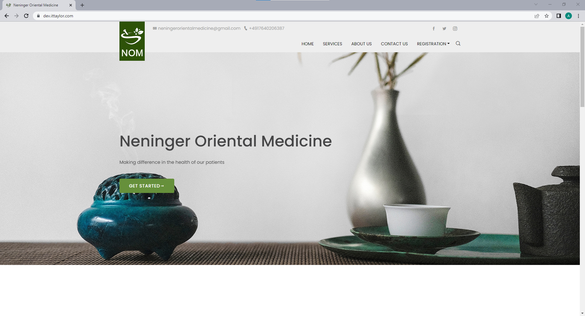
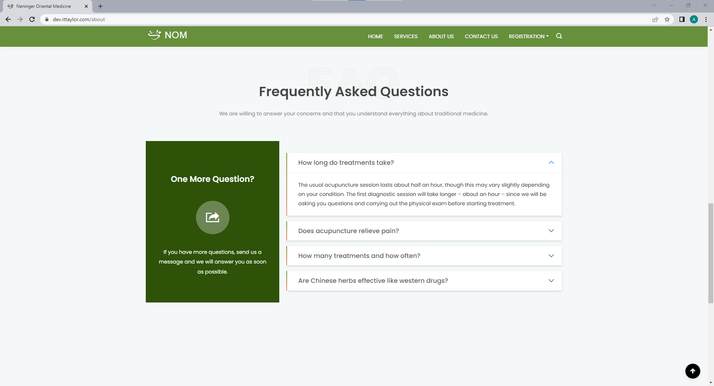

Neninger Oriental Medicine
Description
A responsive website that allows patients to login into the system and fills out forms updating all symptoms associated with their illness.
Features
- Application stores patient personal information and medical records
- Ability to add, edit, review and remove information
- Ability to create blog posts
Technology: HTML, CSS, React.js, Node.js and MySQL

